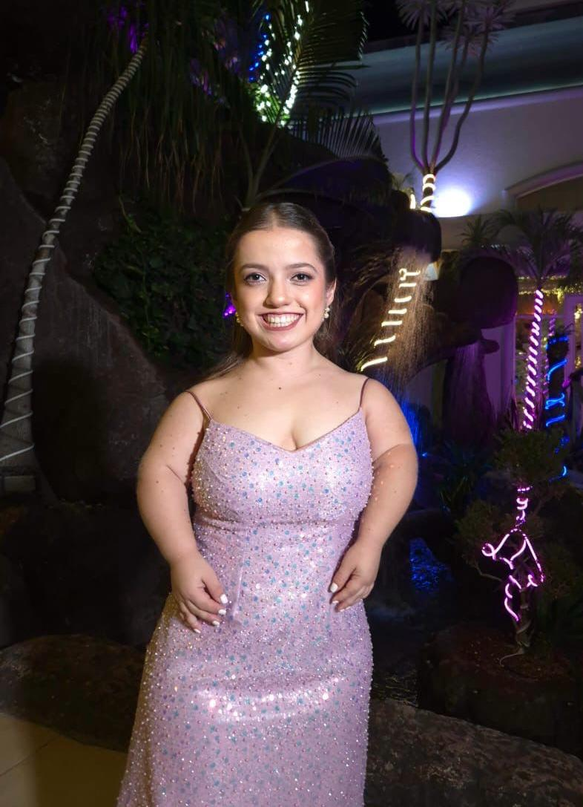
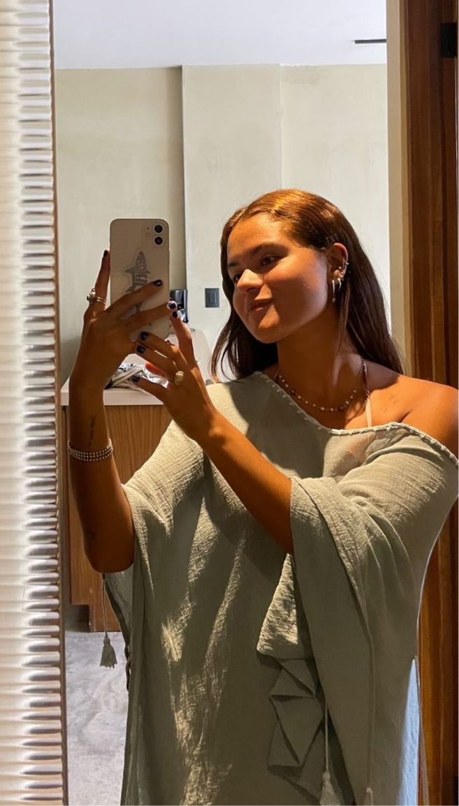
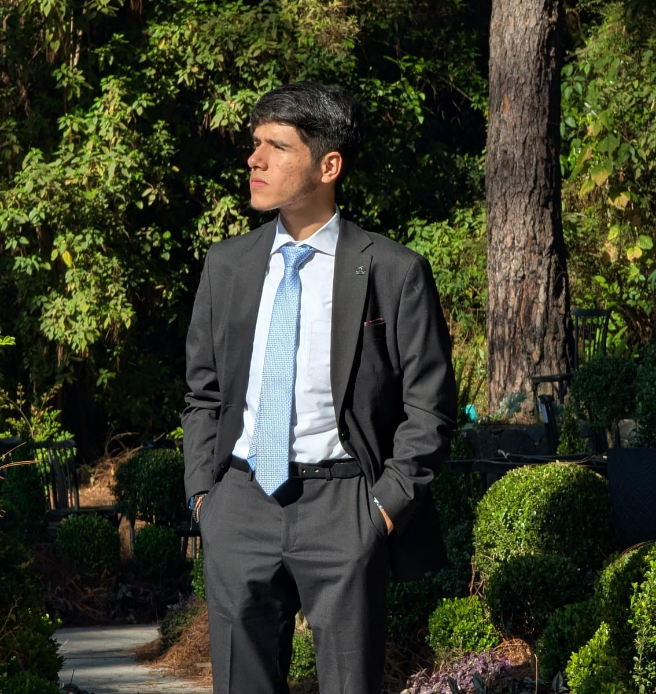
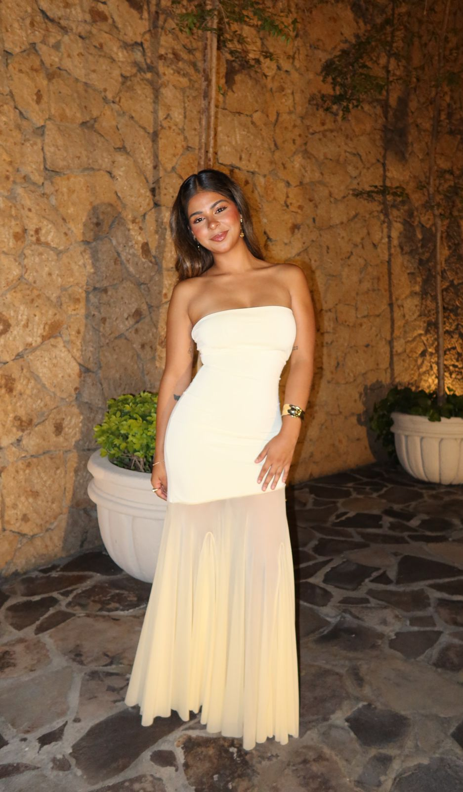
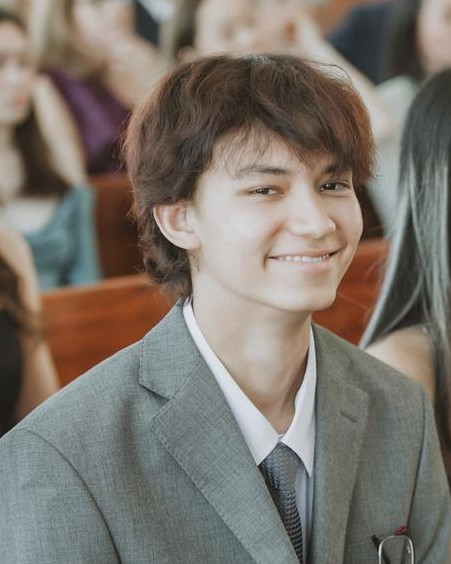
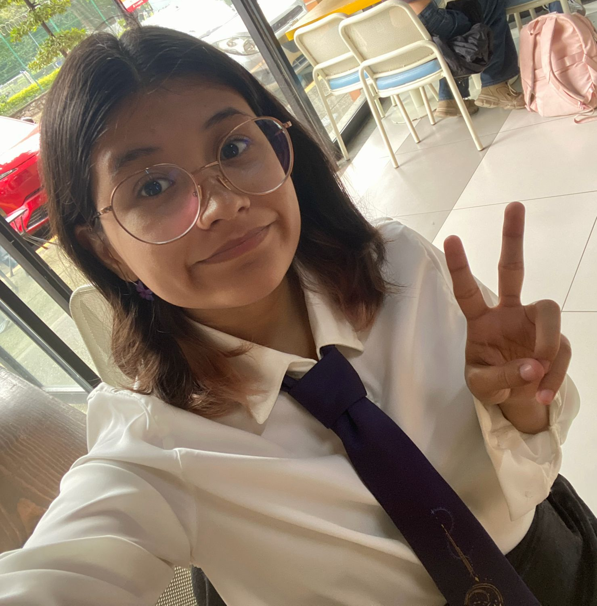

Somos un equipo conformado por cinco comunicólogos y una científica de datos del ITESO, impresionados por los eventos sucedidos el #22F en la ZMG que, a su vez, se extendieron por todo México. A partir de nuestra preocupación, decidimos realizar un proyecto para reconocer el suceso, las violencias desprendidas de él, el miedo generado y los remanentes posteriores al #22F.
Nuestro nombre, SURVIS, nace desde un lugar muy humano: el dolor y la impotencia de ver cómo muchos compañeros de nuestra carrera de Ciencias de la Comunicación se fueron quedando en el camino. Con el tiempo entendimos que permanecer aquí no era solamente cuestión de seguir inscritos o asistir a clases, sino de resistir emocionalmente, de seguir adelante incluso cuando todo se volvía pesado, incierto o desgastante. Por eso nos identificamos como supervivientes; porque cada une de nosotres tuvo razones para rendirse, pero aun así decidió quedarse.
Ser survivor no significa únicamente sobrevivir por rutina, sino encontrar un motivo para hacerlo. En nuestro caso, sobrevivimos gracias a la amistad, al apoyo mutuo y al amor genuino por nuestra carrera. Este nombre representa una hermandad construida entre desvelos, estrés, proyectos y momentos difíciles que terminaron uniéndonos más. SURVIS simboliza a quienes permanecen no por obligación, sino porque encontraron algo que vale la pena defender: nuestros sueños, vínculos con les demás y todo lo que hemos construido juntes. Y en esta ocasión, también representa el esfuerzo, la dedicación y la unión que pusimos en este proyecto.

Ana Laura Romero
Participó en la recopilación de datos de Twitter y manejo de datos para su análisis y visualización. Colaboró en la redacción del proyecto y organización de la información. Tiene Mac, la peor decisión que pudo haber tomado, es muy sonriente y le gusta hacer reír a los demás.

Carinthia Aleysa Pérez
Participó en la identificación de fuentes, recopilación de datos de archivos abiertos, manejo de datos para su análisis y visualización, aplicación de entrevistas y redacción de contenidos. Su computadora no soportó tantos datos, pero sí las buenas amistades.

Jorge Emmanuel Rojas
Participó en la identificación de fuentes, recopilación de datos de Twitter y manejo de datos para su análisis y visualización. Fue el apoyo moral del equipo para mantenernos motivados y unidos, el supervisor de chisme de Viv y sufrió por tener una Mac.

Luna Natali Ludueña
Participó en la elaboración del formato de entrevistas y aplicación de estas, se encargó de las decisiones estéticas del proyecto y la redacción de contenidos. Ni compu tenía, pero sacó el proyecto adelante.

Tsuyoshi Arao
Participó en la limpieza de datos, manejo de datos para su análisis y visualización, aplicación de entrevistas y programación de la página web. Fue el ‘alivio cómico’ del grupo, y después de Viv, el más familiarizado con las herramientas digitales que se usaron.

Viviana Toledo
Participó en la identificación de fuentes, recopilación de datos de archivos abiertos y noticieros, limpieza de datos, manejo de datos para su análisis y visualización, elaboración de cartografías, redacción de contenido, maquetado y programación de la página web. Usa Linux e incitaba a les demás a cambiarse, programó parte de la página web en el aeropuerto.